Plotting in Python
Contents
Plotting in Python#
Matplotlib (MPL) is the default choice, with other options including Seaborn for high-level plotting, Plotly for JS plotting framework, Bokeh for interactive plotting.
Installation#
Matplotlib is included in the Anaconda distribution.
Install it via conda in case you got a miniconda distribution that comes without
conda install matplotlib
If you’re using pip instead of conda
pip install matplotlib
Reference#
Matplotlib Tutorial – A Complete Guide to Python Plot w/ Examples
Matplotlib Tutorial: Learn the basics of Python’s powerful Plotting library
Anatomy of a figure (from mpl official website)

Conventional short names for matplotlib and numpy:
import matplotlib.pyplot as plt
import numpy as np
# For inline plotting in jupyter notebooks
%matplotlib inline
Line plots#
Line plots are usually for visualization of 2D data.
e.g. time series (y-t), phase plots (x-y)
plt.plot(xs, ys)
See also
# Data #
x = np.linspace(0, 10, num=100)
y1 = np.sin(x)
y2 = np.cos(x)
# Opens a new figure to be plotted
plt.figure()
# plot(x, y, <MATLAB stylestring>)
plt.plot(x, y1, '-')
plt.plot(x, y2, '--')
[<matplotlib.lines.Line2D at 0x7f053d096c50>]
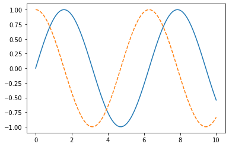
Add more things to the plot.
# Let's add some more options
# Set figure (whole picture) size to 10 * 10
plt.figure(figsize = (10, 10))
# Add grid
plt.grid()
# Title
plt.title("Waves")
# Lables for X & Y axes
plt.xlabel("Time")
plt.ylabel("Amplitude")
# 'o-' does not mean orange line rather than circle dots
# '^' means triangle dots
# line labels are also set
plt.plot(x, y1, '^-', label="Line1", color='orange')
plt.plot(x, y2, 'b--', label="Line2")
# Show the labels
plt.legend(loc='upper left')
<matplotlib.legend.Legend at 0x7f053af9db70>
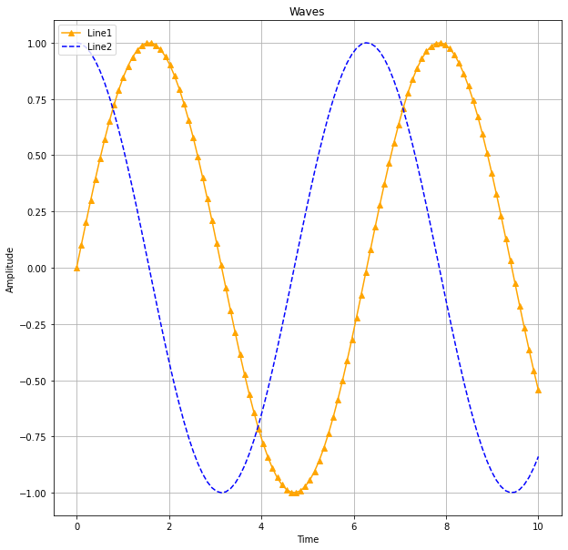
Line customization#
color: https://xkcd.com/color/rgb/
line/marker style: https://www.labri.fr/perso/nrougier/teaching/matplotlib/#figures-subplots-axes-and-ticks


Multiple series#
1 column = 1 series of data
# Data #
x = np.linspace(0, 10, 100)
# 4 columns of data = 4 series
# y = sin(x + 0.5k * pi); k = 0, 1, 2, 3
y = np.sin(x[:, np.newaxis] + np.pi * np.arange(0, 2, 0.5))
y.shape
(100, 4)
plt.figure()
plt.plot(x, y)
[<matplotlib.lines.Line2D at 0x7f053ae42710>,
<matplotlib.lines.Line2D at 0x7f053ae42770>,
<matplotlib.lines.Line2D at 0x7f053ae42890>,
<matplotlib.lines.Line2D at 0x7f053ae41690>]
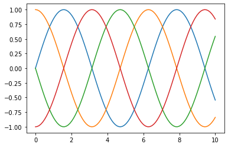
plt.figure()
lines = plt.plot(x, y[:, 0:2])
# Another way to set labels
plt.legend(lines, ['First', 'Second'], loc='upper right')
<matplotlib.legend.Legend at 0x7f053ae77c40>
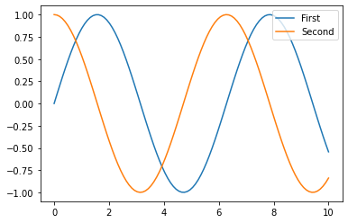
Tweaking Axis ticks#
Logarithmic scale
plt.xscale('log')
Hiding ticks. @stack overflow
plt.tick_params(
axis='x', # changes apply to the x-axis
which='both', # both major and minor ticks are affected
bottom=False, # ticks along the bottom edge are off
top=False, # ticks along the top edge are off
labelbottom=False) # labels along the bottom edge are off
See also: axes()
plt.tick_params(
axis='x', # changes apply to the x-axis
which='both', # both major and minor ticks are affected
bottom=False, # ticks along the bottom edge are off
top=False, # ticks along the top edge are off
labelbottom=False) # labels along the bottom edge are off
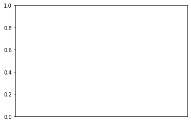
# Bode plot example
# Transfer function
def H(w):
wc = 4000*np.pi
return 1.0 / (1.0 + 1j * w / wc)
freq = np.logspace(1,5) # frequencies from 10**1 to 10**5 Hz
plt.figure()
plt.plot(freq, 20*np.log10(abs(H(2*np.pi*freq))))
plt.xscale('log')
plt.xlabel('Frequency (Hz)')
plt.ylabel('dB')
Text(0, 0.5, 'dB')
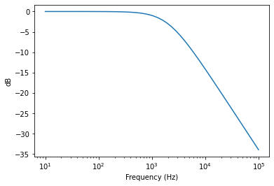
Multiple subplots#
One could use MATLAB-style to define the subplots.
But the object-oriented way is even better. See subplots().
# MATLAB style
# subplot(rows, columns, panel number)
plt.subplot(2, 1, 1)
plt.plot(x, y1)
# create the second panel and set current axis
plt.subplot(2, 1, 2)
plt.plot(x, y2)
[<matplotlib.lines.Line2D at 0x7f053a778b80>]
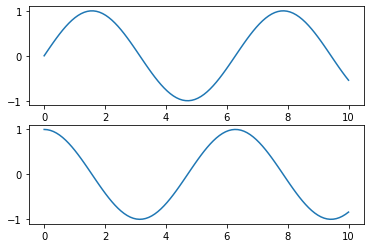
# OO style (recommended)
fig, ax = plt.subplots(2)
# Plot for each axes (an unit in the figure)
ax[0].plot(x, y1)
ax[0].set_title("Upper panel")
ax[1].plot(x, y2)
ax[1].set_title("Lower panel")
# Common title
plt.suptitle("Common title")
Text(0.5, 0.98, 'Common title')
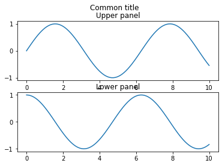
Scatter plots#
plt.plot(x, y, 'o')
Ref: Python Data Science Handbook
# Using plot() function
plt.figure()
x = np.linspace(0, 10)
y1 = np.sin(x)
plt.plot(x, y1, 'o', color='black')
# Same as plt.scatter(x, y1, marker='o', color='black')
[<matplotlib.lines.Line2D at 0x7f053a68c940>]
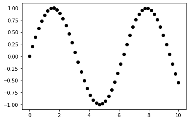
Color map (cmap) and colorbar()#
plt.scatter(x, y, c=colors)
plt.colorbar()
See also colormaps and colorbar
# Data #
rng = np.random.RandomState(0)
x = rng.randn(100)
y = rng.randn(100)
colors = rng.rand(100)
sizes = 1000 * rng.rand(100)
# Plot #
plt.figure()
# cmap for color mapping
plt.scatter(x, y, c=colors, s=sizes, alpha=0.3, cmap='viridis')
# show color scale bar
plt.colorbar()
<matplotlib.colorbar.Colorbar at 0x7f053a6ed450>
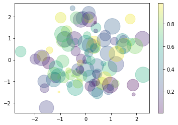
Error bar#
plt.errorbar(x, y, yerr=dy, fmt='.k')
See also: errorbar
# Data #
x = np.linspace(0, 10, 50) # Input
dy = 0.8 # Uncertainty level
y = np.sin(x) + dy * np.random.randn(50) # Output with uncertainty
# Plot #
plt.figure()
# xerr or yerr parameter to set error bars
plt.errorbar(x, y, yerr=dy, fmt='.k')
<ErrorbarContainer object of 3 artists>
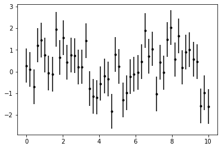
Contour plots#
plt.contour(X, Y, Z)
See also contour() and imshow()
# data #
def f(x, y):
return np.sin(x) ** 10 + np.cos(10 + y * x) * np.cos(x)
x = np.linspace(0, 5, 50)
y = np.linspace(0, 5, 40)
X, Y = np.meshgrid(x, y)
Z = f(X, Y)
# plot #
plt.figure()
plt.contour(X, Y, Z)
<matplotlib.contour.QuadContourSet at 0x7f053a5eabc0>
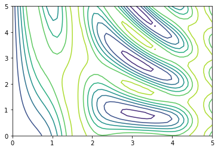
plt.figure()
# Change color map
plt.contour(X, Y, Z, 20, cmap='RdGy')
<matplotlib.contour.QuadContourSet at 0x7f053a61b790>
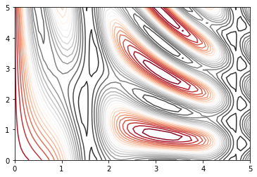
plt.figure()
# contourf() for filled countor plot
plt.contourf(X, Y, Z, 20, cmap='RdGy')
plt.colorbar()
<matplotlib.colorbar.Colorbar at 0x7f0538cfb7c0>
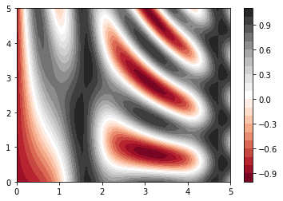
plt.figure()
contours = plt.contour(X, Y, Z, 3, colors='black')
# Add labels of levels in the contour plot
plt.clabel(contours, inline=True, fontsize=8)
# Render image on the plot (faster but lower quality)
plt.imshow(Z, extent=[0, 5, 0, 5], origin='lower', cmap='RdGy', alpha=0.5)
plt.colorbar()
<matplotlib.colorbar.Colorbar at 0x7f0538bfeef0>
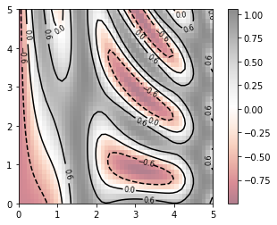
#### set_clim() to set limits on the values in the color bar
import numpy as np
import matplotlib.pyplot as plt
import matplotlib as mpl
# Data #
x = np.linspace(0, 10, 1000) # 1000 * 1
I = np.sin(x) * np.cos(x[:, np.newaxis]) # 1000 * 1000
speckles = (np.random.random(I.shape) < 0.01)
I[speckles] = np.random.normal(0, 3, np.count_nonzero(speckles))
# Figure #
fig, axs = plt.subplots(ncols=2, figsize=(10, 5))
# Left subplot
axs[0].set_title('Without limit')
im0 = axs[0].imshow(I, cmap='RdBu')
cb0 = plt.colorbar(im0, ax=axs[0], orientation='horizontal')
# Right subplot
axs[1].set_title('With limit')
im1 = axs[1].imshow(I, cmap='RdBu')
im1.set_clim(-1, 1)
cb1 = plt.colorbar(im1, ax=axs[1], extend='both', orientation='horizontal')
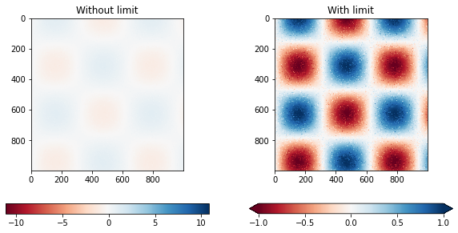
Plotting vector fields (quiver / streamplot plot)#
Source: https://scipython.com/blog/visualizing-the-earths-magnetic-field/
More on: quiver(), streamplot()
Another example: https://stackoverflow.com/questions/25342072/computing-and-drawing-vector-fields
import matplotlib.pyplot as plt
import numpy as np
# make data
x = np.linspace(-4, 4, 6)
y = np.linspace(-4, 4, 6)
X, Y = np.meshgrid(x, y)
U = X + Y
V = Y - X
# plot
fig, ax = plt.subplots()
ax.quiver(X, Y, U, V, color="C0", angles='xy',
scale_units='xy', scale=5, width=.015)
ax.set(xlim=(-5, 5), ylim=(-5, 5))
plt.show()
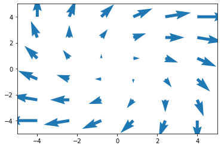
# Streamplot examples
import numpy as np
import matplotlib.pyplot as plt
import matplotlib.gridspec as gridspec
w = 3
Y, X = np.mgrid[-w:w:100j, -w:w:100j]
U = -1 - X**2 + Y
V = 1 + X - Y**2
speed = np.sqrt(U**2 + V**2)
fig = plt.figure(figsize=(7, 9))
gs = gridspec.GridSpec(nrows=3, ncols=2, height_ratios=[1, 1, 2])
# Varying density along a streamline
ax0 = fig.add_subplot(gs[0, 0])
ax0.streamplot(X, Y, U, V, density=[0.5, 1])
ax0.set_title('Varying Density')
# Varying color along a streamline
ax1 = fig.add_subplot(gs[0, 1])
strm = ax1.streamplot(X, Y, U, V, color=U, linewidth=2, cmap='autumn')
fig.colorbar(strm.lines)
ax1.set_title('Varying Color')
# Varying line width along a streamline
ax2 = fig.add_subplot(gs[1, 0])
lw = 5*speed / speed.max()
ax2.streamplot(X, Y, U, V, density=0.6, color='k', linewidth=lw)
ax2.set_title('Varying Line Width')
# Controlling the starting points of the streamlines
seed_points = np.array([[-2, -1, 0, 1, 2, -1], [-2, -1, 0, 1, 2, 2]])
ax3 = fig.add_subplot(gs[1, 1])
strm = ax3.streamplot(X, Y, U, V, color=U, linewidth=2,
cmap='autumn', start_points=seed_points.T)
fig.colorbar(strm.lines)
ax3.set_title('Controlling Starting Points')
# Displaying the starting points with blue symbols.
ax3.plot(seed_points[0], seed_points[1], 'bo')
ax3.set(xlim=(-w, w), ylim=(-w, w))
# Create a mask
mask = np.zeros(U.shape, dtype=bool)
mask[40:60, 40:60] = True
U[:20, :20] = np.nan
U = np.ma.array(U, mask=mask)
ax4 = fig.add_subplot(gs[2:, :])
ax4.streamplot(X, Y, U, V, color='r')
ax4.set_title('Streamplot with Masking')
ax4.imshow(~mask, extent=(-w, w, -w, w), alpha=0.5, cmap='gray', aspect='auto')
ax4.set_aspect('equal')
plt.tight_layout()
plt.show()
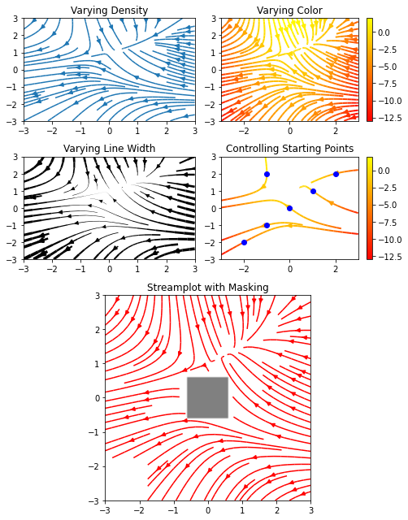
anotations#
anotations: https://matplotlib.org/tutorials/text/annotations.html#plotting-guide-annotation
data = np.random.rand(10)
plt.plot(data)
plt.annotate("Text",(2,0.5),(1,0.2),arrowprops= dict())
plt.annotate("peak",
(np.where(data==data.max())[0][0],data.max()), # where to point
xycoords='data',
xytext=(np.where(data==data.max())[0][0]+1,data.max()-0.1), # where to put text
arrowprops = dict(facecolor="grey",shrink=0.09)) # arrow property
plt.annotate("fixed arrow",
(0.8,0.8),xycoords='axes fraction',
xytext=(0.5,0.5),textcoords='axes fraction',
arrowprops = dict(arrowstyle="->")
)
# plt.show()
Text(0.5, 0.5, 'fixed arrow')
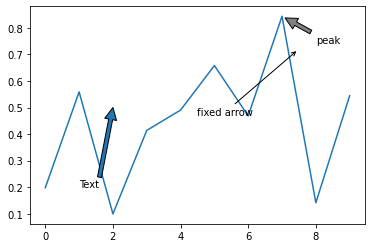